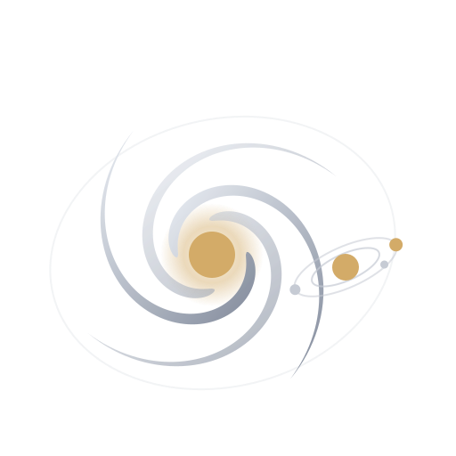

Where the solar system actually goes: the Sun's 225-million-year orbit of the Milky Way, the planets winding around that track, and half a million real Gaia DR3 stars about them — drawn at true scale.
This is where the solar system actually goes. Not a diagram of the planets, but the path they take through the Milky Way: the Sun on its 225-million-year orbit, the planets winding around that track, half a million real stars from Gaia DR3 around them, and the Galaxy's own shape behind. It was built to make that motion visible, and to be as accurate as a browser allows — where a model stands in for a measurement, the piece says so rather than hoping you will not ask.
The Sun orbits the Milky Way's core at ~230 km/s. The planets, on an ecliptic tilted ~60° to the galactic plane, weave helical paths around its track.
This is where the solar system actually goes. Not a diagram of the planets, but the path they take through the Milky Way: the Sun on its 225-million-year orbit, the planets winding around that track, half a million real stars from Gaia DR3 around them, and the Galaxy's own shape behind. It was built to make that motion visible, and to be as accurate as a browser allows — where a model stands in for a measurement, the piece says so rather than hoping you will not ask.
The Sun orbits the Milky Way's core at ~230 km/s. The planets, on an ecliptic tilted ~60° to the galactic plane, weave helical paths around its track.
The long-form notes live as their own pages now — one subject each, opening in a new tab.
Everything drawn or claimed traces to these. Data first, then the science, then the images.